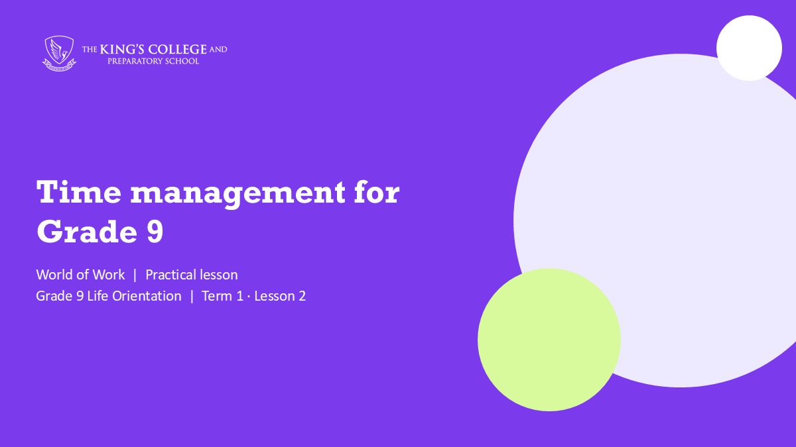

Term 1 · Lesson 2 · Practical: Google Calendar set-up
Time management for Grade 9
Start here
Today I will
- Prioritise using urgent vs important
- Explain responsibility and accountability
- Set up my Google Calendar for the term
Grade 9 has subject choices, sport, tests and Task 1 all in one term. What is your biggest time-waster?
Words to know
- Priority
- Something more important than other things, so it gets done first.
- Responsibility
- Taking care of what you are supposed to do.
- Accountability
- Owning your actions and their results, without excuses.
- Procrastinate
- To keep putting something off.
- Effective
- Getting the right result.
- Efficient
- Getting it done without wasting time or energy.
Slides

Videos
Notes
Grade 9 is a busy year: more tests and tasks, sport and culture, and the important choice of Grade 10 subjects. Learners who plan their time and take responsibility for their work feel less stressed and have time for the things that matter.
What is time management?
Time management means planning how you use your time so that the important things get done on time. It does not mean being busy every minute. It means deciding what matters most, making space for it and building in rest, because a tired brain does not learn well.
Urgent vs important
Ask two questions about every task: Is it URGENT (must it happen now or very soon)? Is it IMPORTANT (does it matter for my goals, health or relationships)? This gives four groups.
| Group | Example | What to do |
|---|---|---|
| Urgent and important | A test tomorrow; Task 1 due today | Do it now. |
| Important, not urgent | Studying a week ahead; starting a task early; training; sleep | Plan it. Successful learners spend most of their time here. |
| Urgent, not important | Most notifications and messages | Keep it short or do it later. |
| Not urgent, not important | Endless scrolling, binge-watching | Limit it. |
If you leave important tasks until they become urgent, you end up rushing, sleeping less and doing poorer work. Planning ahead keeps you in control.
Responsibility and accountability
Responsibility means taking care of what you are supposed to do: knowing your deadlines, bringing your books, doing your part in a group. Accountability goes one step further: owning your actions and their results without blaming others. An accountable learner who misses a deadline says 'I didn't plan well; this is how I'll fix it', not 'nobody told me'.
| Excuse | Accountable response |
|---|---|
| 'The teacher never told us.' | 'I'll check Google Classroom every day.' |
| 'I didn't have time.' | 'I'll plan my week every Sunday.' |
| 'My partner didn't do their part.' | 'Next time we'll agree on deadlines at the start.' |
Effective and efficient
Being efficient means getting something done without wasting time or energy. Being effective means getting the right result. You can be efficient but not effective (finishing homework fast but badly), or effective but not efficient (a great project, finished at 2 a.m.). Good time management aims for both: the right work, done well, without wasted time.
Using Google Calendar
- Colours: one colour per subject, and others for sport, church and family.
- Deadlines: add every test and task as 'Due: Subject – task'.
- Study blocks: plan study sessions on the days before each deadline (plan backwards).
- Reminders: two days before each deadline and before each study block.
- Weekly check: every Sunday evening, look at the week ahead and adjust.
Beating procrastination
To procrastinate is to keep putting something off, usually because it feels too big, boring or difficult. Break it into a tiny first step, put your phone in another room, work for 25 minutes and then take a 5-minute break. Starting is the hardest part.
Why Grade 9 needs a plan
In Grade 9, tests and tasks often land in the same week, and you also have sport, culture, church and family commitments. On top of that, you have to research and choose your Grade 10 subjects. Learners who rely on memory alone often miss something. A calendar you check every day takes the pressure off your memory and lets you see busy weeks coming.
Case study: Mia's netball week
Mia had netball trials with Coach Didi on Tuesday and Thursday, an Afrikaans oral for Ms Kruger on Wednesday and a History source-based test for Mr Pretorius on Friday. In Grade 8 she would have panicked on Sunday night. This year, she had added every date to her Google Calendar in Week 1. On the Sunday before, she saw the busy week coming, practised her oral on Saturday, and planned two 30-minute History sessions on Monday and Wednesday. When the oral was moved to Thursday, she simply dragged it in her calendar and adjusted her plan. She took responsibility for her week instead of hoping it would work out.
Questions to think about: How did Mia show accountability? Which of her tasks were 'important, not urgent' on the Sunday? What would have happened without her plan?
Rest is part of the plan
God designed us to need rest (the Sabbath principle of one day in seven). Teenagers need about 8–10 hours of sleep a night. A good weekly plan includes rest, family time and church or youth group on purpose, not only when everything else is done. Rested learners concentrate better, remember more and are kinder to others.
Worked exam answer
Question: Analyse how taking accountability for deadlines can help a Grade 9 learner. (1 x 4) (4)
Answer: An accountable learner plans their own deadlines instead of blaming others ✓ which means they start tasks early and ask for help in time ✓ especially in busy weeks with tests and sport ✓ so they hand in better work, feel less stressed and earn their teachers' trust ✓.
Be able to explain the difference between responsibility and accountability, and between effective and efficient, and to recommend (with a reason and a result) ways to manage time better.
Own your time: plan it, check it, and take responsibility for it.
In class: Set up my calendar
- Open Google Calendar with your school account.
- Create your subject colours.
- Add every test and task date for the term.
- Add study blocks and reminders before each deadline.
- Read the Task 1 brief (My lifestyle challenge): due Friday of Week 4.
Test yourself
- What is the difference between effective and efficient?
- Give one example of being accountable.
- When is Task 1 due?
Show answers
1. Effective = the right result; efficient = no wasted time or energy. 2. e.g. admitting a missed deadline and fixing your plan. 3. Friday of Week 4.
Finished early?
Use the urgent vs important groups to see where your time really goes.
- Draw four boxes in your LO book: Urgent and important; Important, not urgent; Urgent, not important; Not urgent, not important.
- Write two of your real tasks or activities from this week in each box.
- Circle the box where you spend the most time.
- Write one change you will make this week to spend more time in 'Important, not urgent'.